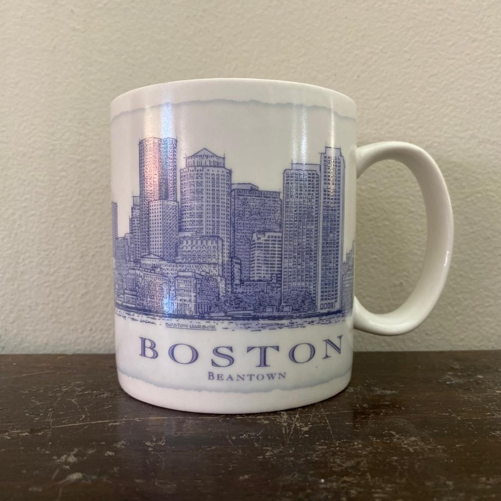
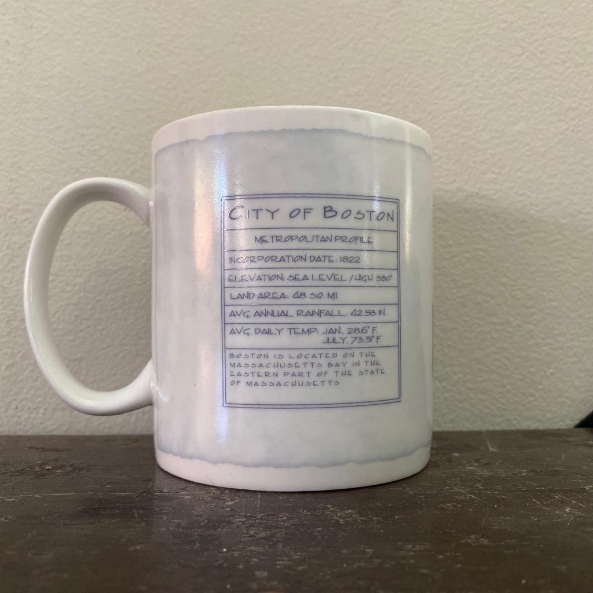

A tall white mug with a blue ink sketch of Boston Harbor on one side. The other side has a chart that includes a metropolitan profile of Boston. It includes Boston's incorporation date, elevation level, land area, average annual rainfall, and average daily temperature. The handle has "Starbucks" printed across it.